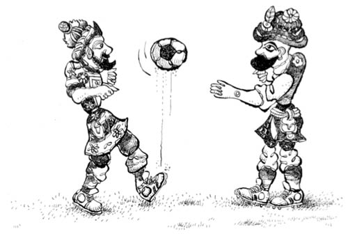

YENİ HAYAT
Otobüsümüz otogara girdiğinde gözlerim uykusuz, yorgun, yarı açıktı. Bursa’da bir sabah vaktini ilk kez gördüm pencereden, ne kadar soğuk olduğunu hissetmem için otobüsten inmem gerekiyormuş. Alacakaranlık ve serin bir ekim sabahı. Günün erken saatine rağmen çevrede bir sürü insan var. Kardeşim yol boyunca uyudu. Ben zaten Ankara yolculuklarından bilindiği gibi gözümü kırpmam; yolculukta etkilenip otobüse kustuğum olurdu da uyuduğumu pek hatırlamam.
Bir bavul, bir küçük çanta, bir kardeş, annem ve babamla taksiye doğru ilerliyoruz. “Orduevine” dedi babam. On beş dakika kadar sonra Bursa Orduevi’ndeyiz. Lobide bizden başka sadece bir er var, o da görevli olduğu için. Koltuklara oturuyoruz. Bir akvaryum var salonda, içinde yeşile çalan aydınlatması olan. Balıklara bakıyorum, plastikten balık adam zeminde yüzükoyun yatmış, belli aralarla yukarı doğru hareket ediyor ve her hareketinde birkaç hava kabarcığı suya karışıyor.
Orduevinde birkaç saat oyalanıyoruz. Hiçbir şey yemek istemiyorum, keyfim yok; tamamen yabancı ve hiçbir şekilde istemediğim bir yerdeyim. Eşyalarımızı taşıyan kamyon saat dokuz gibi yeni evimize varırmış, biz de o nedenle burada oyalanacakmışız.
Zaman yaklaşınca gene benzer bir taksi, bu kez babamın birkaç hafta önce kiraladığı yeni eve getiriyor bizi. Şimdiki Çekirge Meydanı’nda, caddenin hemen kenarında iki katlı ahşap bir eve geliyoruz. Duvarlar kirli sarı ve dar merdivenlerden çıkılan üst kat. Yeni evimizin dış kapısı beyaz ve bir kısmı buzlu cam. İçeri girilince salon yerine kullanılması gereken genişçe hol, buraya kapıları açılan üç oda, bir mutfak, bir banyo ve tuvalet var. Tavanda, daha çok kendini aydınlatmaya çalışan, kablosundan asılı sarı bir lamba... Girişin zemini taş, odalarınki ise tahta döşeme ve üzeri muşamba.
Annem ve Aytül, benim gibi ilk kez gördükleri bu eve şaşkın şaşkın bakıyorlar. Ben hem onlara hem babama hem de eve bakıyorum. Birkaç aylığına buradaymışız! Babam daha önce de -buraya gelmeden önce- söylemişti ama bir gün bile kalınası gibi gelmiyor bize.
Mutfağa giriyorum, hani belki penceresinden elimi uzatıp limon koparabileceğim bir ağaç dalı var mı diye. Tozlu bir pencereden bir teras görüyorum. Kapıyı açıp terasa çıkıyorum, önümüzden geçen caddede onlarca araba... Kız kardeşim de yanıma geliyor, birlikte yola bakıyoruz. Tek bir ağacı olmayan geniş caddeye bakarken tek bir söz bile etmek gelmiyor içimizden.
Kutuların bazılarını açmadan birkaç gün içinde eve yerleşiyoruz. Artık nasıl bir ceza aldıysak İzmir’de, belli ki bir süre hep beraber burada yatacağız!
Şeriflerin evi çok uzak değilmiş. Babam her gün üç beş kez bunu söylüyor. Bizim evden on beş dakikada yürüyerek gidebilirmişiz. Çekirge’nin diğer yamacında Doburca Köyü yolu üzerinde bir yermiş. En kısa zamanda ziyaretlerine gideceğiz ama her evde ayrı bir sürgün, ayrı bir hengâme durumu var.
Birkaç günümüz yerleşme faslıyla geçti. Daracık eve neyi ne kadar yerleştirebileceğine baktı annem. Siyah, büyük yemek masamızı girişteki salona benzeyen yer dışında bir yere koymanın imkânı yok. Masayı oraya kurduğumuzda dış kapıdan giren biri köşedeki odaya girmek için ya masaya ya da duvarlara sürtünecek. Alışmak için sürtünmek durumunda olduğumuz evde sıkıntı diz boyu.
Babam yeni muhite ve eve duyduğumuz derin muhabbeti biraz olsun hafifletebilmek için bir akşamüstü bizi yürüyüşe çıkardı. Kıyıdan kıyıdan, yola pek de yaklaşmadan bir süre yürüdük. Meğer Karagöz ve Hacivat’ın temsili mezarları bizim eve beş dakikaymış. Ben o zamanlar mezarın temsili olduğundan habersizim. Yolun hemen kenarındaki geniş, betonla kaplı ve başucunda demir bir kaide üzerinde iki kafadarın resimlerinin bulunduğu -birbirlerine dönük, elleri çenelerinde- mezarlarının yanına varıyoruz.
Aklıma Emel’in lafı geliyor (“Karagöz’le Hacivat Bursa’da”), gözlerim mezara saplı kılıcı arıyor, hatta babamı sıkıştırıyorum, elimden bir kaza çıkmasın diye, önceden alıp sakladılar mı diye. “Oğlum, ben de bilmiyorum valla” gibisinden beni yatıştırıyor. Ulu Camii yapılırken bu ikisi de orada çalışırmış. Çalışırlarken o kadar çok şamata olurmuş ki bir süre sonra işler aksamaya başlamış. Bakmışlar olacak gibi değil, “dur”dan “sus”tan anlamıyorlar, idam etmişler! Babam sonunu böyle bağladı, ben yutkundum; Şerif’imle bir araya geldiğimizde aksatamayacağımız bir iş olmaz çünkü. Bir yandan etrafa, bir yandan da kukla şeklinde çizilmiş Karagöz ve Hacivat’a bakıyorum; şartsa iş çıkışı konuşup patırtı yapsaydınız ne vardı sanki, gibisinden aklım karışıyor. Kardeşim, “Şerif’le ayağınızı denk alın Bursa’da” dercesine bana bakıyor.
Evin civarında toprak ve ağaç görebildiğim tek yer, hemen yanımızdaki yokuştan hamama doğru inerken solda. Varıyorum, üç beş çocuk var, ellerinde misketler. İzmir’de “meşe”, Ankara’da “misket” dediğimiz şeye burada “cilli” diyorlar. Kim kazanıyorsa diğeri ona elindekilerden bir tane veriyor. “Ben öbür cilliyi kazandım” diye arada bir sesleri yükselse de maraza büyümüyor, belli ki hukukları eskiye dayanıyor. Erkek çocukların görüşüp tanışması için en ideal şey, bildiğiniz gibi futbol topudur. Bir topla altışardan on iki çocuğu minimum yarım gün oyalayıp, ertesi gün için de sözleştirebilirsiniz. Aynı topun ikişerden dört kızı oyalama şansı sıfır olup, bir oyuncak bebeğin en az ikisini küstürme şansı ise yüzde doksandır. Sokakta bunca yıl asfalt toprak yalamışlığımız olduğundan içim rahat. Önemli olan, cinsi erkek olan akrana rastlamaktır. Plastik de olsa bir top, işe her zaman yarar.
Ertesi gün koltuğumun altında plastik topumla aynı arsadayım. Cilli de sevilen bir oyun belki ama topun yeri her zaman başka. “Gol atan kaleye” şeklinde başladık. Zemin toprak. Rüzgâr tozutsa da yağış olmadığından zemin futbola elverişli. Dallardaki kuşlarla üç beş kedi seyirci. Yeni gelen futbolcuyu tartıyor gözler. Ben de yeteneklerimi hemen dökmüyorum ortaya. Emaneten buralardayız, birkaç ay sonra asıl muhite gideceğiz, kiralık oynuyorum gibisinden başladığım oyunda on dakika sonra beş yıllık kontrat yapmış duruma geçiyorum. Kan ter içinde ama mutlu mutlu eve varıyorum.
Anneme bakıyorum, lojmandaki keyiften eser yok yüzünde. Anlıyorum; bu evde yıkanmak için tahta parçaların banyodaki sobanın bir taraflarına tıkılması ve bir süre beklenmesi işi aklımdan çıkmış. Çeşmeye elini her attığında sıcak suyun olmadığı, banyonun karanlık ve ısınmak için bir şeylerin yanmak zorunda olduğu yeni evimizdeyiz.
İçinizden kalbi temiz olanlar, “Ne güzel, yiğitler Bursa’da okumak zorunda değiller, en azından bu konuda kafaları rahat” diye düşünebilirler. Taşınma işi olduğundan okul işine girmedim ama aha anlatıyorum...